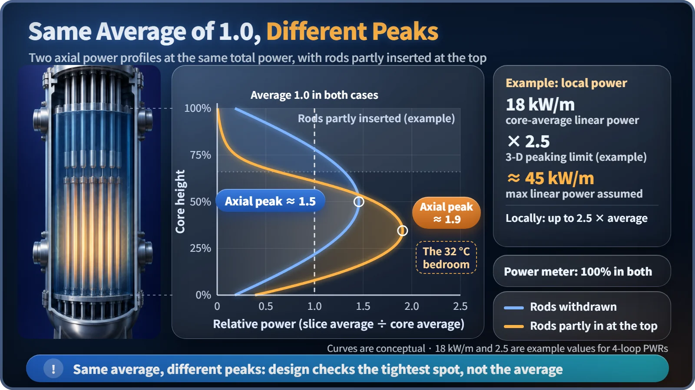
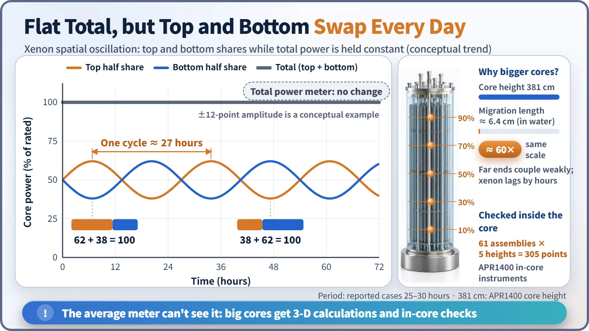

Modeling, Simulation & Computation · 254
The Building Averages 23 °C, but My Bedroom Is a Sauna — What Happens When You Ignore Spatial Effects in a Reactor
A core average can look perfectly normal while one spot runs at 2.5 times the average or power swings from top to bottom about once a day.
Spatial effects are the fact that power in a reactor core differs from place to place, and that its shape changes during operation. Safety limits apply to the hottest spot, not the average, so a model that sees only the core average can miss partial-rod power shifts and xenon oscillations that leave total power unchanged. [1]
The building averages 23 °C, but the bedroom is a sauna
A midwinter notice in the elevator: "Average indoor temperature across the complex: 23 °C (about 73 °F). Heating operating normally." Meanwhile, the main bedroom of apartment 1203 is at 32 °C (about 90 °F), because the floor heating warms only one side. The average is true. It just says nothing about the bedroom.
Reactors have the same trap. Represent the whole core with one average value and the calculation becomes simple, but several things go missing. Those missing things are called spatial effects.
The hottest apartment sets the margin
The limits that protect fuel apply to the single hottest spot: the heat produced per metre of fuel rod (linear power density), or the margin left before a rod's surface is blanketed by a steam film, are checked at the tightest point, the hot spot, and along the hot channel where the coolant heats up the most.
Designers therefore watch the peaking factor, local maximum ÷ average. In a Westinghouse 4-loop pressurized water reactor, for example, average linear power is roughly 18 kW/m and the peaking factor limit in the operating rules is around 2.5, so the design must allow for about 45 kW/m somewhere in the core. The limit differs by plant and cycle, and if a local value reaches it, power must be reduced even when average power is below rated. [2]

Close one radiator valve
Close only the living room radiator and the same heat piles up in the bedroom. Control rods do exactly this. In a pressurized water reactor they enter from above; partly inserted at the top, they absorb neutrons there and power shifts toward the bottom. If operators hold total power steady, the power meter barely moves while the peak near the bottom grows. A calculation that treats the core as one point cannot see this, in principle.
Two rooms that warm up in turns, once a day
Now imagine thermostats that respond hours late: the living room overheats, its valve closes, the heat moves to the bedroom, and the two rooms swing back and forth.
In a reactor, the slow thermostat is xenon-135, a fission product that absorbs neutrons extraordinarily well. If power in the upper core rises slightly, the xenon there is burned off faster, absorption drops and power rises further. Hours later, the extra iodine-135 (half-life about 6.6 hours) turns into xenon, pushing the top back down, and the bottom rises instead. This is xenon spatial oscillation, with a period of roughly a day; measured cases run about 25–30 hours. [3]
It can happen while total power is held constant: as much as the top goes up, the bottom goes down. Nothing physically shakes; the location of the power slowly migrates.
A studio mixes quickly; a big complex goes its own way
A neutron travels from birth to absorption over a distance measured by the migration length, only about 6.4 cm in water. The APR1400 core is 381 cm tall, about 60 times longer. Its top and bottom are only weakly linked by neutrons, so each moves half on its own, and the hours-long iodine-to-xenon delay turns that into oscillations. A small research reactor moves as one block and an average works well; large commercial cores are more prone to power shifts and xenon oscillations. [4]

So the core carries more than 300 detectors
Spatial effects are well known, and design and operation are built around them. At the design stage, three-dimensional calculations check the power distribution and peaking factors over the whole operating cycle, and operating limits are set from the results. During operation, detectors above and below the core, outside the vessel, watch for power shifts in real time, and detectors inside the core check and correct the calculated distribution. The APR1400 has 61 in-core instrument assemblies with 5 detectors each, 305 measurement points in all. When an oscillation starts, operators move control rods little by little to settle it early. [5]
Key takeaways
Power in a core varies by position and its shape changes during operation. Limits are set at the hottest spot and managed with peaking factors. Partial rod insertion shifts power, xenon can swing it top to bottom about once a day at constant total power, and because big cores are tens of times larger than the neutron migration length, they are calculated in 3-D and watched with detectors inside and outside the core.